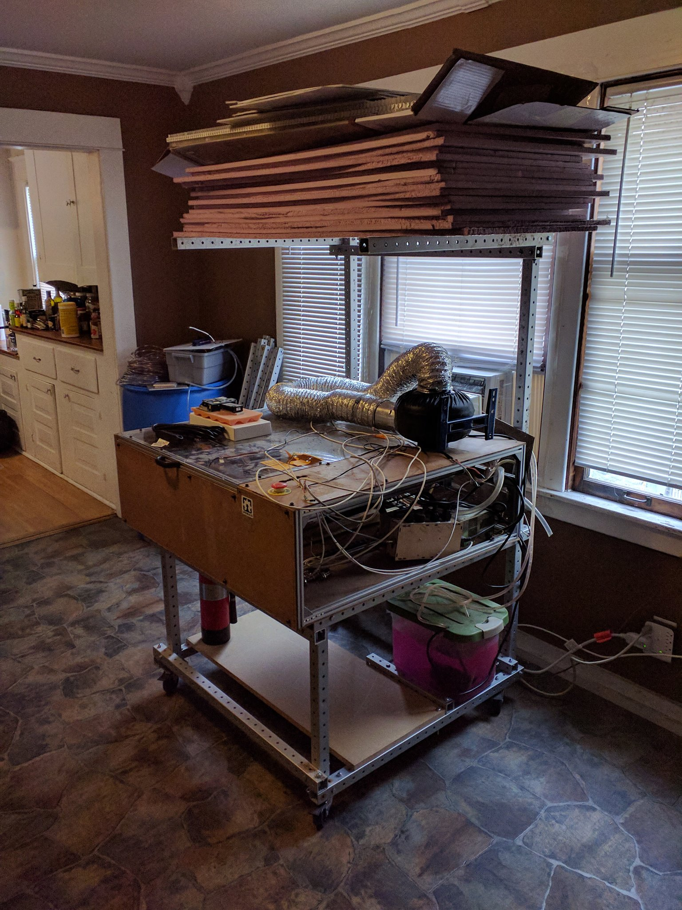
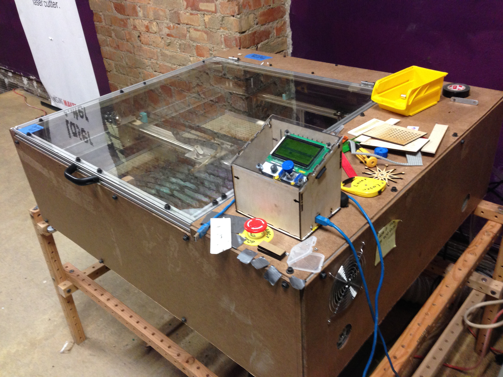
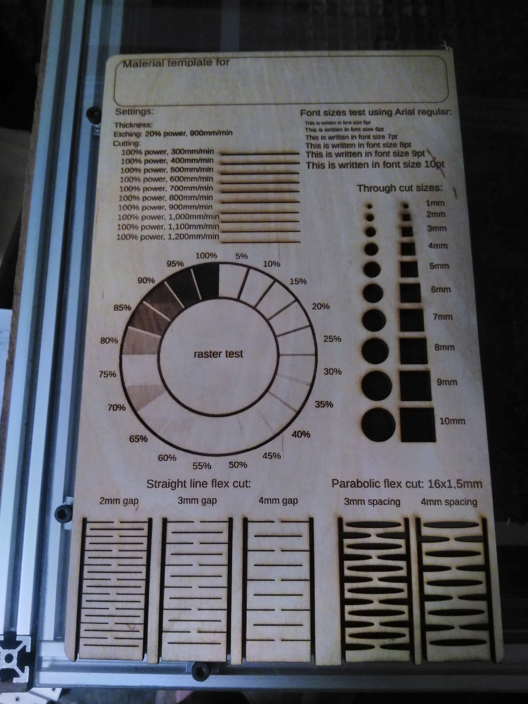
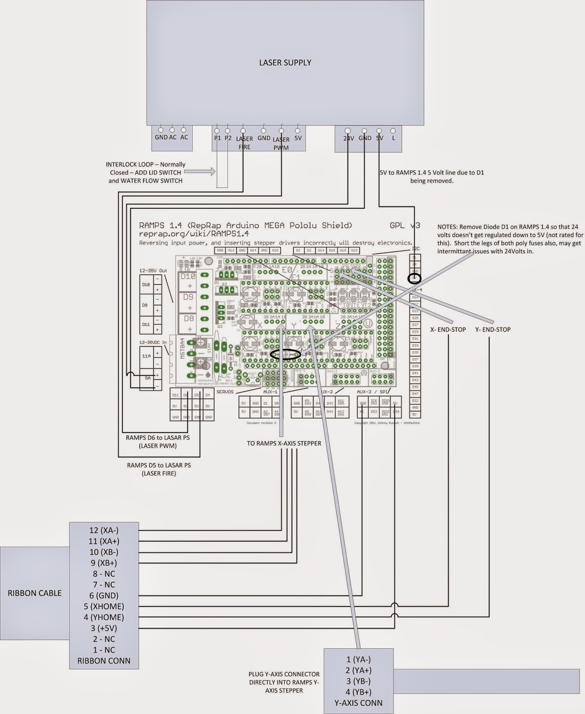

laser cutters revision 5875
^ Projects infobox ^^
| image | Parametric buildlog laser 2.0.scad.png |
| designer | [[user:tim|Timothy Schmidt]] |
| date | 2008 |
| vitamins | |
| materials | |
| transformations | |
| lifecycles | |
| tools | [[cutters|Cutters]], [[wrenches|Wrenches]], [[3d_printers|3D printers]] |
| parts | [[frames|Frames]], [[nuts|Nuts]], [[bolts|Bolts]], [[plates|Plates]], [[motors|Motors]], [[controllers|Controllers]], [[sheets|Sheets]] |
| techniques | [[tri_joints|Tri joints]] |
Introduction
Challenges
Approaches




Specifications
The laser cutter is a modified Buildlog.net 2.x 40W design. It has been modified to extend the cutting area in the Y axis and to use a standard Replimat controller.
It makes use of an 18mm GaSe focus lens with 55mm focal length. (add lightobject link)
Workflows
- Download the inkscape template file cutting-surface.svg
- Open it in inkscape and draw the object you'd like to cut
- Use this plugin to generate gcode in inkscape: thlaser-inkscape-plugin
- Load the G Code file in Pronterface, or onto an SD card
- Cut!
Firmwares
Firmware is on github, here
To do's
- implement trace max cutting area w/ dim laser function.
G Codes
The laser is controlled by sending commands ("g codes") to it via USB->serial connection. Additionally, the laser control electronics can read files containing these commands from an inserted SD card without the aid of an attached computer.
There are several ways to command the laser to fire, each is enabled or disabled at compile time, according to the following option in Configuration.h:
- LASER_FIRE_G1 (**default: on**): G0 moves the laser to a specified set of coordinates __without__ firing, a G1 command moves the laser to the specified coordinates __while__ firing.
- LASER_FIRE_SPINDLE (**default: on**): M3 turns the laser on in place, without requiring it to move. M5 turns the laser off in place.
- LASER_FIRE_E (**default: off**): Any movement in the E axis (which represents the extruder when controlling a 3D printer) fires the laser. In this way, the laser can make use of unmodified g code generated for 3D printers.
Each of these firing controls accepts the following parameters, which can also be manipulated without firing or moving the laser by using them with the M649 command:
<pre>
; Moves to (5, 6, 7) at speed 8, laser off
G0 X5 Y6 Z7 F8
; Moves to (5, 6, 7) at speed 8, laser pulsing 1.2 times per millimeter, for 50ms, at 60% power, with serial diagnostics messages, in Pulsed mode.
G1 X5 Y6 Z7 F8 P1.2 L50000 S60 D1 B1
; Without moving in any axis, pulse the laser for 50ms at 60% power, with serial diagnostics messages, in Continuous mode.
M3 L50000 S60 D1 B0
; Without moving in any axis, turn the laser off.
M5
; Without moving in any axis or turning the laser on or off, set the laser power to 50%, pulse length to 60ms, pulses per millimeter to 1.2, in Pulsed mode, without serial diagnostics.
M649 S50.0 L60000 P1.2 B1 D0
----------------------------
S: intensity (0.0-100.0)
L: duration (microseconds)
P: pulses per mm
D: diagnostics (0 = off, 1 = on)
B: laser firing mode (0 = continuous, 1 = pulsed, 2 = raster)
</pre>
In '''Continuous mode''', the laser is turned on, and remains on at the selected intensity until it's instructed to turn off.
'''Pulsed mode''' fires punctuated bursts at intervals matching P: PULSES_PER_MM, each lasting for L: DURATION. That gives us all the information we need to time the laser firing and extinguishing from the inner loop of the stepper driver interrupt handler - the core of the firmware. This makes the positioning and timing of pulses in Pulsed mode much more accurate than any other method. Pulse positions are accurate to the nearest step in any axis and reliable minimum pulse times of 250 microseconds have been measured on a 16Mhz Atmega 2560 (better may be possible, but hasn't been tested). Stock Marlin's minimum pulse length is 8.2 milliseconds on the same hardware, and permits adjustments no smaller than 1 millisecond.
'''Raster mode''' is a special variation of Pulsed mode which allows you to specify a unique intensity for each pulse in a variable-length horizontal line of evenly spaced pulses, with configurable 'pixel' size and aspect ratio, arbitrary line-advance, and selectable left or right blitting. This is everything required for maximally efficient arbitrarily large 2D image blitting, but allows for a number of other uses as well. An obvious improvement would be to allow for Raster blitting along an arbitrary line in 3D space - patches welcome! Because pulse timing can be done in the stepper driver interrupt handler, and the information necessary for many pulses is contained in a single command, Raster mode is very fast. Raster mode only works with the “G7” command which accepts a number of unique parameters:
<pre>
G7 N0 L68 DAAAAAAAAAAAAAAAAAAAAAAAAAAAAAAAAAAAhaGBUQFRiZ0ZPVExARUU6RTpITD1GU05Q
-------------------------------------------------------------------------------
N: new line: increments Y axis by LASER_RASTER_MM_PER_PULSE * LASER_RASTER_ASPECT_RATIO from Configuration.h 0 = negative movement in the X axis, 1 = positive X axis movement.
L: byte length of the packed pixel set
D: data, base 64 encoded 0-255/pixel
</pre>
In firmware, you have two options for controlling a laser:
'''Single pin:''' The LASER_FIRE pin supplies a PWM signal at at Hz specified as LASER_PWM in Configuration.h, adjusting duty cycle of the wave to control intensity, and supplies logic level LOW when off. Common for laser diode
'''Two pin:''' The LASER_FIRE pin supplies a logic level signal HIGH for fire, LOW for extinguish. The LASER_INTENSITY pin supplies a PWM signal at at Hz specified as LASER_PWM in Configuration.h, adjusting duty cycle of the wave to control intensity.

laser.cpp contains the laser_fire and laser_extinguish functions
This firmware also has options to control peripherals of a laser cutter such as the air assist, water pump or even idle shut off.
Parts
{| class="wikitable"
|-
! Quantity !! Part !! Link
|-
| 1 || Peripheral control relay board || [[http://yourduino.com/sunshop2/index.php?l=product_detail&p=201|Yourduino.com]]
|-
| 1 || [[controller|Controller]] ||
|-
| 4 || [[casters|Casters]] ||
|-
| 1 || 40W CO2 laser Mirror/ Lens DIY bundle || [[https://www.lightobject.com/Product/ProductQuickView?productId=551|Lightobject]]
|-
| 1 || 135W Air compressor/ pump for CO2 laser AC110V || [[https://www.lightobject.com/Product/ProductQuickView?productId=832|Lightobject]]
|-
| 1 || Thermal [[exchangers|exchangers]] ||
|}
Consumables
Safety precautions
Maintenance procedures
- Should we put filters on the air and water lines?
- Panic button. Signal the motherboard to safely stop all motion.
Belt tensioning procedure
Y Axis
- Power off the laser cutter
- Move the Y axis carriage to the rear of the laser cutter
- Loosen the bolt mounting the Y belt idler bracket to the frame, pull the bracket toward the front of the machine to tighten the belt, while tightening the mounting bolt to secure the bracket in place.
- Repeat procedure for the second Y axis belt.
X axis
- Loosen the bolt mounting the X belt idler bracket to the gantry, pull the bracket toward the left side of the machine to tighten the belt while tightening the mounting bolt to secure the bracket in place.
Z axis leveling procedure
- Cut zip ties holding material support grid
- Remove the grid from the laser cutter and set aside
- Loosen the Z axis belt tensioning bracket located at the rear of the machine
- Disengage the Z axis belt from each of the pulleys connected to the Z axis leadscrews
- Use the 8 inch digital calipers (found in the metal shop) to measure the distance between the Z axis leadscrew brackets on the lasercutter frame, and the paired bracket on the material support frame at each corner
- Adjust each leadscrew by hand
- Engage each pulley with the belt
- Adjust and re-tighten the Z axis belt tensioning bracket at the rear of the machine
- Re-install the material support grid
References
- Sam's|Laser FAQ
- 5 Commandments of the laser cutter
- Scalable Laser 2.x - Gantry, Frame, Skins and Drive Mods
- Laser goggles
- Hershey fonts
- KrabzCAM
- Laser pointer forums: Direct laser PCB etching through Cu ablation (useful graphs)
<youtube>qmoE29ZkUSc</youtube>